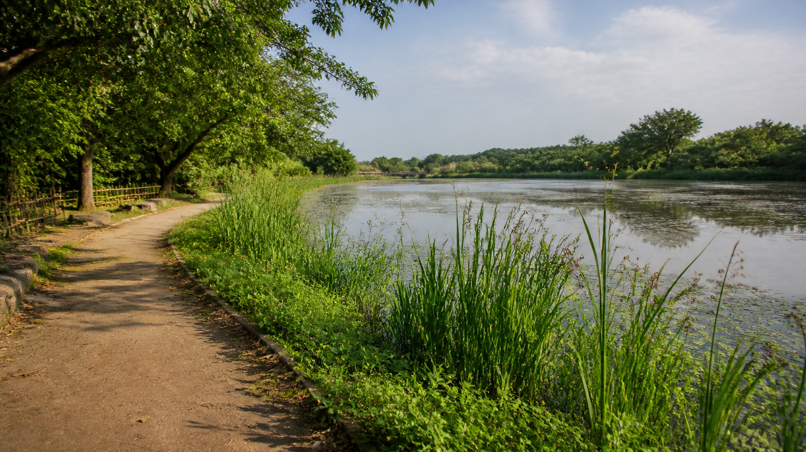

位置摘要
- 地點
- 華興池生態埤塘公園
- 地址
- 337 桃園市大園區華興路 205 號
- 範圍
- 總面積約 6.97 公頃，水域約 5.7 公頃。
- 觀察重點
- 環湖步道、水岸草地、溢流口、遊戲場、濱水休憩空間與生態棲地。
華興池位於大園區田心里，鄰近大園市區、住宅區與農田。因為水域面積大，從地圖上可以清楚看見水面、池岸、步道和周邊街廓之間的關係。
資料顯示，華興池與老街溪、田心子溪及許厝港濕地一帶的水文環境有關，因此它不只是休閒公園，也能被看成地方水系與生態廊帶中的一個節點。
用位置、水域與周邊環境理解埤塘

地圖能先定位華興池的位置，現場照片則能補上步道、水面、草地與活動空間的實際感受。兩者一起看，才能理解埤塘和周邊生活的關係。
華興池位於大園區田心里，鄰近大園市區、住宅區與農田。因為水域面積大，從地圖上可以清楚看見水面、池岸、步道和周邊街廓之間的關係。
資料顯示，華興池與老街溪、田心子溪及許厝港濕地一帶的水文環境有關，因此它不只是休閒公園，也能被看成地方水系與生態廊帶中的一個節點。
華興池周邊有住宅、道路、遊戲場、咖啡與休憩設施。這讓埤塘從過去較封閉的水利設施，轉變成居民散步、親子活動和認識環境的日常空間。
實地觀察時，可以沿環池步道走一圈，依序記錄水面、岸邊植物、鳥類停棲位置、人工設施與較安靜的棲地區，最後再回到地圖對照空間位置。